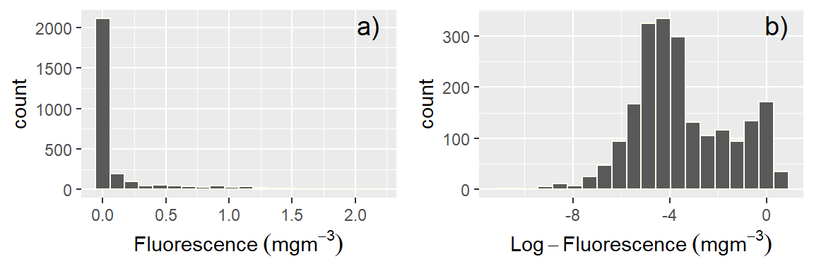

6 Data frame Manipulation
Modern data manipulation with dplyr offers a concise and intuitive way to manipulate and transform data in R. It provides a set of verbs that can be chained together to perform various operations on data frames. These operations include filtering rows, selecting columns, arranging data, grouping, summarizing, and joining datasets. With dplyr, you can efficiently express complex data manipulations using a clear and readable syntax, enhancing your productivity and enabling you to focus on the analysis rather than the mechanics of data manipulation.
Before a dataset can be analysed in R, its often manipulated or transformed in various ways. For years manipulating data in R required more programming than actually analyzing data. That has improved dramatically with the dplyr package. It provides programmers with an intuitive vocabulary for executing data management and analysis tasks. Hadley Wickham (2022), the original creator of the dplyr package, refers to it as a Grammar of Data Manipulation. Because the package provides a set of functions (verbs) that let you modify data and perform common data preparation tasks. The key challenge in programming is mapping from questions about a data set to specific programming operations. With dplyr’s verbs, makes this process smoother, as it enables you to use the same vocabulary to both ask questions and write your code. In other words, the dplyr verbs lets you easily talk with data and transform a dataset in various ways with easy.
6.1 Why use dplyr?
Using this package’s functions will allow you to code expressively—code that are easy to write and read, which make you effective and efficient data scientists.
- Great for data exploration and manipulation
- Intuitive to write and easy to read, especially when using the chaining syntax
- Fast on data frame—tabular dataset
6.2 Core dplyr Functions
I will not go through all of the dplyr functions in this chapter. I will demonstrate the core functions that are used regularly for manipulating data. The five core functions also called verbs include:
-
select()to select columns based on their names -
filter()to rows in data frame -
arrange()to re-order or arrange the rows in ascending or descending order -
mutate()to create new columns—add new variable -
summarise()to make a summary of variable(s) -
group_by()to group observation -
sample_n()andrename()to make random sample from the data set
The group_by() function perform other common task which are related to the split-apply-combine concept. You can use these verbs when you describe the algorithm or process for interrogating data, and then use dplyr verbs to write code that will closely follow your “plain language” description because it uses functions and procedures that share the same language.
For most of us who are familiar with the R base function, you will find that most dplyr functions on data frames can be expressed succinctly because you don’t need to repeat the name of the data frame. This becomes handy in operation, because dplyr package comes with the pipe operateor %>% from the magrittr package (Bache and Wickham 2022), which allows to combine several functions in a chain to manipulate data.
To use dplyr functions to manipulate your data, it must be already installed in your machine so that you can load with a require () function. Once the package is loaded, its functions are available for use. dplyr is a key package of the tidyverse ecosystem—a collection of R packages, which also includes other packages like, readr (Wickham, Hester, and Bryan 2022), purr,tibble (Müller and Wickham 2022), stringr (Wickham 2019), forcats, tidyr (Wickham and Girlich 2022) and ggplot2 (Wickham 2016).
6.3 Data
Data frames are ideal for representing data where each row is an observations and each column is a variable. Nearly all packages in a tidyverse work on data frames new version called tibble. A tibble provides stricter checking and better formatting than the traditional data frame.
To demonstrate the usefulness of the dplyr package for manipulating data, we will use the CTD data of 22 stations casted along the coastal water of Tanzania. I have prepared the data, cleaned and align the profile into 5 meter standard depth for each cast and merged them into a single .csv file. You need to load the file into your R session. We can import the file with read_csv() function from the readr package (Wickham, Hester, and Bryan 2022). The read_csv() function gives out a tibble (Müller and Wickham 2022).
6.4 Choosing rows: Filtering observations
The first dplyr verb we’ll explore is filter(). This function is primarily used to create a subset of observations that meet a specified conditions. The filter() function lets you pick out rows based on logical expressions. You give the function a predicate, specifying what a row should satisfy to be included. For instance, take a look at the chunk below:
# A tibble: 637 × 12
station time lon lat pressure temperature salinity oxygen
<chr> <dttm> <dbl> <dbl> <dbl> <dbl> <dbl> <dbl>
1 st1 2004-08-18 15:27:46 40.6 -10.5 5 25.2 33.9 3.93
2 st1 2004-08-18 15:27:46 40.6 -10.5 10 25.1 34.9 4.49
3 st1 2004-08-18 15:27:46 40.6 -10.5 15 25.1 34.9 4.50
4 st1 2004-08-18 15:27:46 40.6 -10.5 20 25.0 34.9 4.51
5 st1 2004-08-18 15:27:46 40.6 -10.5 25 24.9 34.9 4.51
6 st1 2004-08-18 15:27:46 40.6 -10.5 30 24.9 34.9 4.50
7 st1 2004-08-18 15:27:46 40.6 -10.5 35 24.9 34.9 4.49
8 st1 2004-08-18 15:27:46 40.6 -10.5 40 24.9 34.9 4.48
9 st1 2004-08-18 15:27:46 40.6 -10.5 45 24.8 34.9 4.46
10 st1 2004-08-18 15:27:46 40.6 -10.5 50 24.6 34.9 4.44
# ℹ 627 more rows
# ℹ 4 more variables: fluorescence <dbl>, spar <dbl>, par <dbl>, density <dbl>The expression calls the ctd dataset and feed into the filter()and pick all observations with pressure below 150meters and create a new datase called surface. This is an expression where a single conditional statement is used.
We can also limit the of the variable of interest by combining multiple conditional expressions as part of the filter(). Each expression (argument) is combined with an “AND” clause by default. This means that all expressions must be matched for a recorded to be returned. For instance we want to pick observations that were measured between 5 and 10 meters water only. We combine theses expressions with & operator;
# A tibble: 44 × 12
station time lon lat pressure temperature salinity oxygen
<chr> <dttm> <dbl> <dbl> <dbl> <dbl> <dbl> <dbl>
1 st1 2004-08-18 15:27:46 40.6 -10.5 5 25.2 33.9 3.93
2 st1 2004-08-18 15:27:46 40.6 -10.5 10 25.1 34.9 4.49
3 st2 2004-08-18 17:00:01 40.8 -10.5 5 25.2 34.8 4.47
4 st2 2004-08-18 17:00:01 40.8 -10.5 10 25.2 34.8 4.47
5 st3 2004-08-18 20:32:54 41.0 -10.5 5 NA NA NA
6 st3 2004-08-18 20:32:54 41.0 -10.5 10 25.0 34.9 4.49
7 st4 2004-08-18 22:44:56 41.1 -10.5 5 NA NA NA
8 st4 2004-08-18 22:44:56 41.1 -10.5 10 NA NA NA
9 st5 2004-08-19 00:59:59 41.3 -10.5 5 NA NA NA
10 st5 2004-08-19 00:59:59 41.3 -10.5 10 NA NA NA
# ℹ 34 more rows
# ℹ 4 more variables: fluorescence <dbl>, spar <dbl>, par <dbl>, density <dbl>We can also use the between() function, which is equivalent to pressure >= 0 & pressure <= 10 in above chunk to achive the same result.
# A tibble: 44 × 12
station time lon lat pressure temperature salinity oxygen
<chr> <dttm> <dbl> <dbl> <dbl> <dbl> <dbl> <dbl>
1 st1 2004-08-18 15:27:46 40.6 -10.5 5 25.2 33.9 3.93
2 st1 2004-08-18 15:27:46 40.6 -10.5 10 25.1 34.9 4.49
3 st2 2004-08-18 17:00:01 40.8 -10.5 5 25.2 34.8 4.47
4 st2 2004-08-18 17:00:01 40.8 -10.5 10 25.2 34.8 4.47
5 st3 2004-08-18 20:32:54 41.0 -10.5 5 NA NA NA
6 st3 2004-08-18 20:32:54 41.0 -10.5 10 25.0 34.9 4.49
7 st4 2004-08-18 22:44:56 41.1 -10.5 5 NA NA NA
8 st4 2004-08-18 22:44:56 41.1 -10.5 10 NA NA NA
9 st5 2004-08-19 00:59:59 41.3 -10.5 5 NA NA NA
10 st5 2004-08-19 00:59:59 41.3 -10.5 10 NA NA NA
# ℹ 34 more rows
# ℹ 4 more variables: fluorescence <dbl>, spar <dbl>, par <dbl>, density <dbl>In the next example, two conditional expressions are passed. The first is used to filter surface water below 200 m, and the second statement filter records that above latitude 6°S
# A tibble: 223 × 12
station time lon lat pressure temperature salinity oxygen
<chr> <dttm> <dbl> <dbl> <dbl> <dbl> <dbl> <dbl>
1 st17 2004-08-23 19:42:30 40.1 -5.49 5 25.6 35.2 4.40
2 st17 2004-08-23 19:42:30 40.1 -5.49 10 25.4 35.1 4.45
3 st17 2004-08-23 19:42:30 40.1 -5.49 15 25.3 35.1 4.48
4 st17 2004-08-23 19:42:30 40.1 -5.49 20 25.4 35.2 4.48
5 st17 2004-08-23 19:42:30 40.1 -5.49 25 25.4 35.2 4.48
6 st17 2004-08-23 19:42:30 40.1 -5.49 30 25.4 35.2 4.48
7 st17 2004-08-23 19:42:30 40.1 -5.49 35 25.4 35.2 4.46
8 st17 2004-08-23 19:42:30 40.1 -5.49 40 25.4 35.2 4.48
9 st17 2004-08-23 19:42:30 40.1 -5.49 45 25.4 35.2 4.47
10 st17 2004-08-23 19:42:30 40.1 -5.49 50 25.4 35.2 4.45
# ℹ 213 more rows
# ℹ 4 more variables: fluorescence <dbl>, spar <dbl>, par <dbl>, density <dbl>In this case, the surface.transect dataset has records where both conditions are met—the pressure is blow 200 meter and latitude above -6. Note that when two or more conditions are paased, the & operator is used.
You may sometimes want to know stations and at what depth a particular variable has missing values. You can pick all variable in the data frame using is.na() function.
# A tibble: 7 × 12
station time lon lat pressure temperature salinity oxygen
<chr> <dttm> <dbl> <dbl> <dbl> <dbl> <dbl> <dbl>
1 st3 2004-08-18 20:32:54 41.0 -10.5 5 NA NA NA
2 st4 2004-08-18 22:44:56 41.1 -10.5 5 NA NA NA
3 st4 2004-08-18 22:44:56 41.1 -10.5 10 NA NA NA
4 st5 2004-08-19 00:59:59 41.3 -10.5 5 NA NA NA
5 st5 2004-08-19 00:59:59 41.3 -10.5 10 NA NA NA
6 st10 2004-08-19 19:36:50 39.7 -8.83 5 NA NA NA
7 st10 2004-08-19 19:36:50 39.7 -8.83 10 NA NA NA
# ℹ 4 more variables: fluorescence <dbl>, spar <dbl>, par <dbl>, density <dbl>You can also drop the observation with missing values in the data frame using the !is.na() operator
# A tibble: 2,789 × 12
station time lon lat pressure temperature salinity oxygen
<chr> <dttm> <dbl> <dbl> <dbl> <dbl> <dbl> <dbl>
1 st1 2004-08-18 15:27:46 40.6 -10.5 5 25.2 33.9 3.93
2 st1 2004-08-18 15:27:46 40.6 -10.5 10 25.1 34.9 4.49
3 st1 2004-08-18 15:27:46 40.6 -10.5 15 25.1 34.9 4.50
4 st1 2004-08-18 15:27:46 40.6 -10.5 20 25.0 34.9 4.51
5 st1 2004-08-18 15:27:46 40.6 -10.5 25 24.9 34.9 4.51
6 st1 2004-08-18 15:27:46 40.6 -10.5 30 24.9 34.9 4.50
7 st1 2004-08-18 15:27:46 40.6 -10.5 35 24.9 34.9 4.49
8 st1 2004-08-18 15:27:46 40.6 -10.5 40 24.9 34.9 4.48
9 st1 2004-08-18 15:27:46 40.6 -10.5 45 24.8 34.9 4.46
10 st1 2004-08-18 15:27:46 40.6 -10.5 50 24.6 34.9 4.44
# ℹ 2,779 more rows
# ℹ 4 more variables: fluorescence <dbl>, spar <dbl>, par <dbl>, density <dbl>When you have string variable in the data frame with character or factor format, you can filter the certain observation with %in% statement. For example, to obtain profiles from three stations: st1, st8, and st13, we can write the code as;
# A tibble: 347 × 12
station time lon lat pressure temperature salinity oxygen
<chr> <dttm> <dbl> <dbl> <dbl> <dbl> <dbl> <dbl>
1 st1 2004-08-18 15:27:46 40.6 -10.5 5 25.2 33.9 3.93
2 st1 2004-08-18 15:27:46 40.6 -10.5 10 25.1 34.9 4.49
3 st1 2004-08-18 15:27:46 40.6 -10.5 15 25.1 34.9 4.50
4 st1 2004-08-18 15:27:46 40.6 -10.5 20 25.0 34.9 4.51
5 st1 2004-08-18 15:27:46 40.6 -10.5 25 24.9 34.9 4.51
6 st1 2004-08-18 15:27:46 40.6 -10.5 30 24.9 34.9 4.50
7 st1 2004-08-18 15:27:46 40.6 -10.5 35 24.9 34.9 4.49
8 st1 2004-08-18 15:27:46 40.6 -10.5 40 24.9 34.9 4.48
9 st1 2004-08-18 15:27:46 40.6 -10.5 45 24.8 34.9 4.46
10 st1 2004-08-18 15:27:46 40.6 -10.5 50 24.6 34.9 4.44
# ℹ 337 more rows
# ℹ 4 more variables: fluorescence <dbl>, spar <dbl>, par <dbl>, density <dbl>6.5 select
The second verb we are going to demonstrate is the select() function. Often you work with large datasets with many columns but only a few are actually of interest to you. The select() function selects columns of the data frame. select() function allows you to choose variables that are of interest. You can use it to pick out a some columns from the dataset. For instance, fi we want pressure, temprature, salinity, fluorescence and ovygen variables from the data frame, we can simply write a code as;
# A tibble: 2,796 × 5
pressure temperature salinity fluorescence oxygen
<dbl> <dbl> <dbl> <dbl> <dbl>
1 5 25.2 33.9 0.560 3.93
2 10 25.1 34.9 0.599 4.49
3 15 25.1 34.9 0.650 4.50
4 20 25.0 34.9 0.678 4.51
5 25 24.9 34.9 0.760 4.51
6 30 24.9 34.9 0.729 4.50
7 35 24.9 34.9 0.740 4.49
8 40 24.9 34.9 0.693 4.48
9 45 24.8 34.9 0.703 4.46
10 50 24.6 34.9 0.752 4.44
# ℹ 2,786 more rowsBesides just selecting columns, you can use a minus sign to remove variables you do not need from the data frame.
# A tibble: 2,796 × 8
station lon lat pressure temperature salinity oxygen fluorescence
<chr> <dbl> <dbl> <dbl> <dbl> <dbl> <dbl> <dbl>
1 st1 40.6 -10.5 5 25.2 33.9 3.93 0.560
2 st1 40.6 -10.5 10 25.1 34.9 4.49 0.599
3 st1 40.6 -10.5 15 25.1 34.9 4.50 0.650
4 st1 40.6 -10.5 20 25.0 34.9 4.51 0.678
5 st1 40.6 -10.5 25 24.9 34.9 4.51 0.760
6 st1 40.6 -10.5 30 24.9 34.9 4.50 0.729
7 st1 40.6 -10.5 35 24.9 34.9 4.49 0.740
8 st1 40.6 -10.5 40 24.9 34.9 4.48 0.693
9 st1 40.6 -10.5 45 24.8 34.9 4.46 0.703
10 st1 40.6 -10.5 50 24.6 34.9 4.44 0.752
# ℹ 2,786 more rows# A tibble: 2,796 × 8
station lon lat pressure temperature salinity oxygen fluorescence
<chr> <dbl> <dbl> <dbl> <dbl> <dbl> <dbl> <dbl>
1 st1 40.6 -10.5 5 25.2 33.9 3.93 0.560
2 st1 40.6 -10.5 10 25.1 34.9 4.49 0.599
3 st1 40.6 -10.5 15 25.1 34.9 4.50 0.650
4 st1 40.6 -10.5 20 25.0 34.9 4.51 0.678
5 st1 40.6 -10.5 25 24.9 34.9 4.51 0.760
6 st1 40.6 -10.5 30 24.9 34.9 4.50 0.729
7 st1 40.6 -10.5 35 24.9 34.9 4.49 0.740
8 st1 40.6 -10.5 40 24.9 34.9 4.48 0.693
9 st1 40.6 -10.5 45 24.8 34.9 4.46 0.703
10 st1 40.6 -10.5 50 24.6 34.9 4.44 0.752
# ℹ 2,786 more rowsYou can drop a range of variables in the data frame with select() function. For instance, the code below drop all variables beween temperature to fluorescence. You can also select those variables in range by removing the negative sign
# A tibble: 2,796 × 8
station time lon lat pressure spar par density
<chr> <dttm> <dbl> <dbl> <dbl> <dbl> <dbl> <dbl>
1 st1 2004-08-18 15:27:46 40.6 -10.5 5 1177. 53.9 1022.
2 st1 2004-08-18 15:27:46 40.6 -10.5 10 1151. 40.3 1023.
3 st1 2004-08-18 15:27:46 40.6 -10.5 15 1135. 31.3 1023.
4 st1 2004-08-18 15:27:46 40.6 -10.5 20 1124. 25.6 1023.
5 st1 2004-08-18 15:27:46 40.6 -10.5 25 1111. 21.1 1023.
6 st1 2004-08-18 15:27:46 40.6 -10.5 30 1103. 17.2 1023.
7 st1 2004-08-18 15:27:46 40.6 -10.5 35 1097. 13.9 1023.
8 st1 2004-08-18 15:27:46 40.6 -10.5 40 1091. 11.2 1023.
9 st1 2004-08-18 15:27:46 40.6 -10.5 45 1087. 9.05 1024.
10 st1 2004-08-18 15:27:46 40.6 -10.5 50 1084. 7.30 1024.
# ℹ 2,786 more rowsJust like you can pick columns with the matching name, you can also drop any column with a matching name
# A tibble: 2,796 × 6
lon pressure oxygen fluorescence spar par
<dbl> <dbl> <dbl> <dbl> <dbl> <dbl>
1 40.6 5 3.93 0.560 1177. 53.9
2 40.6 10 4.49 0.599 1151. 40.3
3 40.6 15 4.50 0.650 1135. 31.3
4 40.6 20 4.51 0.678 1124. 25.6
5 40.6 25 4.51 0.760 1111. 21.1
6 40.6 30 4.50 0.729 1103. 17.2
7 40.6 35 4.49 0.740 1097. 13.9
8 40.6 40 4.48 0.693 1091. 11.2
9 40.6 45 4.46 0.703 1087. 9.05
10 40.6 50 4.44 0.752 1084. 7.30
# ℹ 2,786 more rowsBecause of the naming conventions, many of the column names that you import dont make sense. You will often need to change the name of the variable. select() function allows you to accomplish that. For example, we want to select station, pressure and fluoresence, but we need also change the name of station to be Cast, pressure to Depth and fluorescence to Chlorophyll. You can achieve that with code written as;
# A tibble: 2,796 × 3
Cast Depth Chlorophyll
<chr> <dbl> <dbl>
1 st1 5 0.560
2 st1 10 0.599
3 st1 15 0.650
4 st1 20 0.678
5 st1 25 0.760
6 st1 30 0.729
7 st1 35 0.740
8 st1 40 0.693
9 st1 45 0.703
10 st1 50 0.752
# ℹ 2,786 more rowsThere are also a number of handy helper functions that you can use with the
select()function to filter the returned columns. These includestarts_with(),ends_with(),contains(),matches(), andnum_range(). I wont illustrate them here, however, you can consult the help document for more information.
6.5.1 Adding new variables: mutate, transmute, add_rownames
Besides selecting sets of existing columns, it’s often useful to add new columns that are functions of existing columns. This is the job of mutate(): Any new variable created with the mutate() function will be added to the end of the data frame. For example, raw fluorescence values are often skewed (Figure 6.1 a) and we often transform them to have normal distribution (Figure 6.1 b).

At this situation, its handy to add a new column with transformed values in the data frame as shown in the code;
# A tibble: 2,796 × 3
pressure fluorescence log.fluorescence
<dbl> <dbl> <dbl>
1 5 0.560 -0.251
2 10 0.599 -0.223
3 15 0.650 -0.187
4 20 0.678 -0.169
5 25 0.760 -0.119
6 30 0.729 -0.138
7 35 0.740 -0.131
8 40 0.693 -0.159
9 45 0.703 -0.153
10 50 0.752 -0.124
# ℹ 2,786 more rowsThe code tells important two steps: the first steps involved selecting the pressure and fluorescence variables, once these variables were selected fromt he ctd data frame were fed into a mutate() function, which computed the logarithmic of fluorescence and assign a new log.fluorescence variable into the data frame.
In a similar way above, we can create a new variable of anomaly as the code below shows;
Code
# A tibble: 2,796 × 3
pressure fluorescence anomaly
<dbl> <dbl> <dbl>
1 5 0.560 0.425
2 10 0.599 0.464
3 15 0.650 0.515
4 20 0.678 0.542
5 25 0.760 0.624
6 30 0.729 0.593
7 35 0.740 0.604
8 40 0.693 0.557
9 45 0.703 0.568
10 50 0.752 0.617
# ℹ 2,786 more rows6.5.2 Arranging rows
The arrange() function in the dplyr package can be used to order the rows in a data frame. This function accepts a set of columns to order by with the default row ordering being in ascending order.
# A tibble: 2,796 × 12
station time lon lat pressure temperature salinity oxygen
<chr> <dttm> <dbl> <dbl> <dbl> <dbl> <dbl> <dbl>
1 st1 2004-08-18 15:27:46 40.6 -10.5 5 25.2 33.9 3.93
2 st2 2004-08-18 17:00:01 40.8 -10.5 5 25.2 34.8 4.47
3 st3 2004-08-18 20:32:54 41.0 -10.5 5 NA NA NA
4 st4 2004-08-18 22:44:56 41.1 -10.5 5 NA NA NA
5 st5 2004-08-19 00:59:59 41.3 -10.5 5 NA NA NA
6 st6 2004-08-19 11:49:08 40.3 -8.83 5 25.2 34.9 4.48
7 st7 2004-08-19 13:33:31 40.2 -8.83 5 25.3 34.9 4.52
8 st8 2004-08-19 15:28:18 40.0 -8.83 5 25.0 34.9 4.59
9 st9 2004-08-19 17:39:39 39.8 -8.83 5 25.1 34.9 4.64
10 st10 2004-08-19 19:36:50 39.7 -8.83 5 NA NA NA
# ℹ 2,786 more rows
# ℹ 4 more variables: fluorescence <dbl>, spar <dbl>, par <dbl>, density <dbl>By default, it orders numerical values in increasing order, but you can ask for decreasing order using the desc() function:
# A tibble: 2,796 × 12
station time lon lat pressure temperature salinity oxygen
<chr> <dttm> <dbl> <dbl> <dbl> <dbl> <dbl> <dbl>
1 st3 2004-08-18 20:32:54 41.0 -10.5 1015 6.43 34.8 2.13
2 st3 2004-08-18 20:32:54 41.0 -10.5 1010 6.45 34.8 2.13
3 st3 2004-08-18 20:32:54 41.0 -10.5 1005 6.45 34.8 2.13
4 st3 2004-08-18 20:32:54 41.0 -10.5 1000 6.45 34.8 2.13
5 st3 2004-08-18 20:32:54 41.0 -10.5 995 6.46 34.8 2.13
6 st3 2004-08-18 20:32:54 41.0 -10.5 990 6.48 34.8 2.13
7 st3 2004-08-18 20:32:54 41.0 -10.5 985 6.55 34.8 2.11
8 st3 2004-08-18 20:32:54 41.0 -10.5 980 6.60 34.8 2.14
9 st3 2004-08-18 20:32:54 41.0 -10.5 975 6.60 34.8 2.17
10 st3 2004-08-18 20:32:54 41.0 -10.5 970 6.62 34.8 2.17
# ℹ 2,786 more rows
# ℹ 4 more variables: fluorescence <dbl>, spar <dbl>, par <dbl>, density <dbl>6.6 Summarizing and Grouping
Summary statistics for a data frame can be produced with the summarise() function. The summarise() function produces a single row of data containing summary statistics from a data frame. For example, you can compute for the mean of fluorescence values:
# A tibble: 1 × 1
fl.mean
<dbl>
1 0.118By itself, it’s not that useful until chained with the group_by() verb to compute summary statistics. There you can split the data into different groups and compute the summaries for each group.For example, you can ask for the mean of and standard deviation values of fluorescence for each station in the data frame:
Code
# A tibble: 5 × 3
station Mean STD
<chr> <dbl> <dbl>
1 st1 0.304 0.319
2 st13 0.0897 0.179
3 st18 0.101 0.287
4 st4 0.0970 0.233
5 st8 0.125 0.381You can group by one or more variables; you just specify the columns you want to separate into different subsets to the function. It works best when grouping by factors or discrete numbers; there isn’t much fun in grouping by real numbers.
Code
# A tibble: 5 × 4
# Groups: station [5]
station lon Mean STD
<chr> <dbl> <dbl> <dbl>
1 st1 40.6 0.304 0.319
2 st13 40.1 0.0897 0.179
3 st18 39.9 0.101 0.287
4 st4 41.1 0.0970 0.233
5 st8 40.0 0.125 0.381summarise() can be used to count the number of rows in each group with nc()—which just counts how many observations you have in a subset of your data: You only need to parse the argument n() in the summarise()` function as;